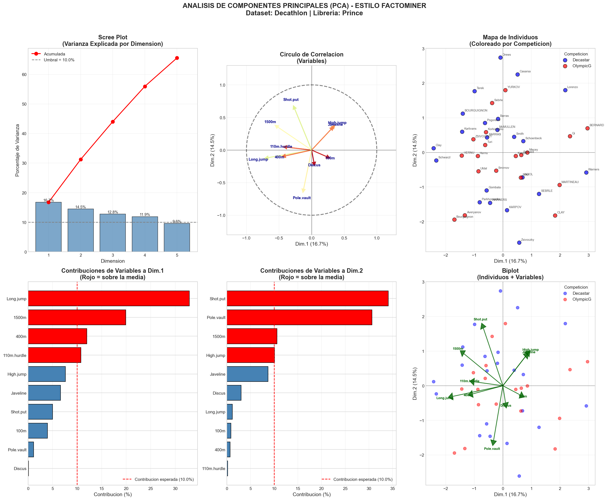
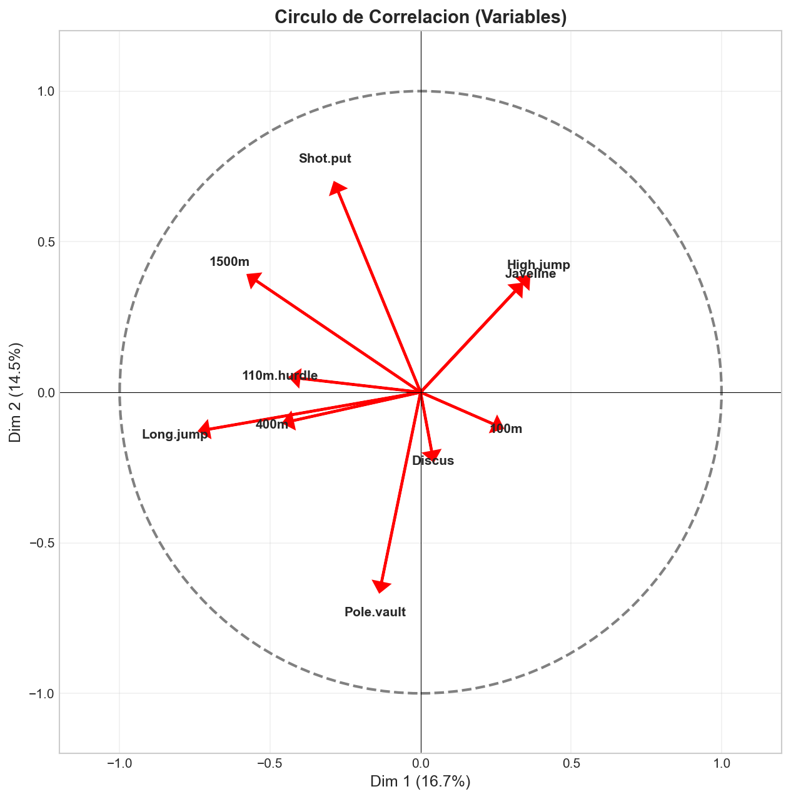

Informacion de Certificacion y Referencia
Autor original/Referencia: @TodoEconometria
Profesor: Juan Marcelo Gutierrez Miranda
Metodologia: Cursos Avanzados de Big Data, Ciencia de Datos, Desarrollo de aplicaciones con IA & Econometria Aplicada.
Hash ID de Certificacion:4e8d9b1a5f6e7c3d2b1a0f9e8d7c6b5a4f3e2d1c0b9a8f7e6d5c4b3a2f1e0d9c
Repositorio: https://github.com/TodoEconometria/certificacionesREFERENCIA ACADEMICA PRINCIPAL:
- Husson, F., Le, S., & Pages, J. (2017). Exploratory Multivariate Analysis by Example Using R. CRC Press.
- Tutorial FactoMineR: http://factominer.free.fr/course/FactoTuto.html
- Le, S., Josse, J., & Husson, F. (2008). FactoMineR: An R Package for Multivariate Analysis. Journal of Statistical Software, 25(1), 1-18.
- Pedregosa, F., et al. (2011). Scikit-learn: Machine Learning in Python. JMLR 12, pp. 2825-2830.
Imagina que tienes datos de 41 atletas que compitieron en decatlon (10 pruebas deportivas). Cada atleta tiene 10 mediciones: tiempos en carreras, distancias en saltos y lanzamientos. La pregunta es: Como podemos "ver" patrones en 10 dimensiones?
El cerebro humano solo puede visualizar 2 o 3 dimensiones. El Analisis de Componentes Principales (PCA) es la herramienta matematica que nos permite "comprimir" esas 10 dimensiones en 2, perdiendo la menor cantidad de informacion posible.
Este manual replica la logica de FactoMineR (el estandar de oro en R) usando Python.
| Aspecto | Scikit-learn | FactoMineR / Prince |
|---|---|---|
| Enfoque | Machine Learning | Exploracion de Datos |
| Objetivo | Reducir dimensiones para un modelo predictivo | Entender que variables mueven a que individuos |
| Metricas clave | explained_variance_ratio_ |
Contribuciones, $\cos^2$, correlaciones |
| Variables suplementarias | No soportadas | Soporte nativo |
| Graficos | Basicos | Circulo de correlacion, biplot |
La diferencia fundamental: Scikit-learn te dice "estos son tus datos comprimidos". FactoMineR te dice "por que tus datos se comprimieron asi, que variables son responsables, y que tan confiable es la representacion de cada punto".
Uno de los errores mas frecuentes en analisis multivariante es imputar datos perdidos con la media sin pensar. Esta practica, aunque comun, puede destruir la estructura real de tus datos y llevarte a conclusiones erroneas.
REGLA DE ORO: Antes de imputar cualquier valor perdido, debes entender POR QUE falta ese dato. La estrategia de imputacion depende del mecanismo de perdida.
| Tipo | Nombre | Significado | Ejemplo | Se puede usar la media? |
|---|---|---|---|---|
| MCAR | Missing Completely At Random | El dato falta por puro azar, sin relacion con ninguna variable | Un sensor fallo aleatoriamente | SI, pero con precaucion |
| MAR | Missing At Random | El dato falta por una razon relacionada con OTRAS variables observadas | Los jovenes no responden preguntas de salario (pero sabemos su edad) | DEPENDE del metodo |
| MNAR | Missing Not At Random | El dato falta por una razon relacionada con EL MISMO valor perdido | Los ricos no declaran su patrimonio PORQUE es alto | NO, sesga los resultados |
Imagina este escenario en el decatlon:
Atleta | 100m | Salto Largo | Lanzamiento
------------|-------|-------------|------------
Velocista A | 10.5s | 7.8m | ???
Velocista B | 10.7s | 7.6m | ???
Lanzador C | 11.8s | 6.2m | 18.5m
Lanzador D | 12.0s | 6.0m | 19.2m
Problema: Los velocistas (A y B) no completaron el lanzamiento (por lesion).
Si imputas con la media del lanzamiento:
- Media de lanzamiento = (18.5 + 19.2) / 2 = 18.85m
- Asignas 18.85m a los velocistas A y B
CONSECUENCIA CATASTROFICA:
- En el PCA, los velocistas aparecen como buenos lanzadores
- El circulo de correlacion mostrara que velocidad y lanzamiento estan correlacionados positivamente
- ESTO ES FALSO - en realidad, los velocistas suelen ser peores lanzadores
El problema: El dato NO falta al azar (MCAR). Falta porque los velocistas se lesionaron en la prueba de lanzamiento (probablemente por falta de tecnica). Es un caso de MAR o MNAR.
Antes de imputar, realiza estos tests de diagnostico:
import missingno as msno
import matplotlib.pyplot as plt
# Visualizar patron de datos perdidos
msno.matrix(df)
plt.show()
# Visualizar correlacion entre datos perdidos
msno.heatmap(df)
plt.show()
Interpretacion:
- Si los huecos estan dispersos aleatoriamente: probablemente MCAR
- Si los huecos se agrupan en filas/columnas especificas: probablemente MAR o MNAR
# Instalar: pip install pyampute
from pyampute.exploration import mcar_test
# Test estadistico para MCAR
result = mcar_test(df)
print(f"p-valor: {result}")
# Si p > 0.05: No se rechaza MCAR (los datos PUEDEN ser aleatorios)
# Si p < 0.05: Se rechaza MCAR (los datos NO son aleatorios)
# Crear indicador de dato perdido
df['tiene_na'] = df['lanzamiento'].isna()
# Comparar medias de otras variables
print(df.groupby('tiene_na')['100m'].mean())
print(df.groupby('tiene_na')['salto_largo'].mean())
# Si las medias son MUY diferentes, el dato NO es MCAR
| Tipo de Perdida | Estrategia Recomendada | Estrategia a EVITAR |
|---|---|---|
| MCAR (aleatorio puro) | Media, mediana, KNN, MICE | - |
| MAR (depende de otras variables) | KNN, MICE, Regresion multiple | Media simple (sesga) |
| MNAR (depende del valor perdido) | Modelos especificos, Analisis de sensibilidad | Media, KNN, MICE (todos sesgan) |
# Solo si tienes POCOS datos perdidos (<5%) y son MCAR
df_limpio = df.dropna()
print(f"Filas eliminadas: {len(df) - len(df_limpio)}")
from sklearn.impute import KNNImputer
# KNN busca los K vecinos mas similares y promedia sus valores
imputer = KNNImputer(n_neighbors=5)
df_imputado = pd.DataFrame(
imputer.fit_transform(df[columnas_numericas]),
columns=columnas_numericas
)
Ventaja: Un velocista con NA en lanzamiento recibira el valor de otros velocistas similares, no el promedio global.
from sklearn.experimental import enable_iterative_imputer
from sklearn.impute import IterativeImputer
# MICE: Multiple Imputation by Chained Equations
imputer = IterativeImputer(max_iter=10, random_state=42)
df_imputado = pd.DataFrame(
imputer.fit_transform(df[columnas_numericas]),
columns=columnas_numericas
)
Ventaja: Usa TODAS las variables para predecir el valor perdido mediante regresiones iterativas.
# Si sabes que el dato depende de una categoria
df['lanzamiento'] = df.groupby('tipo_atleta')['lanzamiento'].transform(
lambda x: x.fillna(x.mean())
)
Ejemplo: Imputar el lanzamiento de un velocista con la media de otros velocistas, no con la media global.
Antes de ejecutar tu analisis PCA, verifica:
df.isna().sum() - Si > 20% en una variable, considera eliminarlamsno.matrix(df) - Busca patronesimport pandas as pd
import numpy as np
from sklearn.impute import KNNImputer
# Cargar datos
df = pd.read_csv('decathlon.csv')
# 1. Diagnostico
print("Datos perdidos por columna:")
print(df.isna().sum())
# 2. Si hay NA, verificar patron
if df.isna().any().any():
# Comparar atletas con/sin NA
df['tiene_na'] = df.isna().any(axis=1)
print("\nComparacion de medias (con NA vs sin NA):")
print(df.groupby('tiene_na')[['100m', 'Long.jump']].mean())
# Si las medias son similares, probablemente MCAR -> podemos imputar
# Si las medias son muy diferentes, cuidado -> usar KNN o MICE
# 3. Imputar con KNN (respeta estructura)
imputer = KNNImputer(n_neighbors=3)
columnas_activas = ['100m', 'Long.jump', 'Shot.put', 'High.jump',
'400m', '110m.hurdle', 'Discus', 'Pole.vault',
'Javeline', '1500m']
df[columnas_activas] = imputer.fit_transform(df[columnas_activas])
print("\nImputacion completada con KNN")
# 4. Ahora SI podemos hacer PCA
from prince import PCA
pca = PCA(n_components=5, rescale_with_std=True)
pca.fit(df[columnas_activas])
PASO 1: DIAGNOSTICAR
"Por que falta este dato?"
-> MCAR, MAR, o MNAR?
PASO 2: DECIDIR
"Puedo imputar sin sesgar?"
-> Si MNAR: NO imputes con media
-> Si MAR: Usa KNN o MICE
-> Si MCAR: Media es aceptable
PASO 3: DOCUMENTAR
"Que hice y por que?"
-> Reporta el % de NA
-> Reporta el metodo usado
-> Reporta si los resultados cambian
MORALEJA: Meter la media "porque si" es como llenar un hueco en un puzzle con una pieza de otro puzzle. Puede que encaje, pero la imagen final estara distorsionada.
Uno de los errores conceptuales mas graves que cometen los estudiantes (y muchos profesionales) es pensar que:
FALSO: "Una base de datos debe estar completa para ser analizada"
Esta creencia viene de la programacion (donde NULL causa errores) y del machine learning (donde muchos algoritmos no aceptan NaN). Pero en analisis de datos reales, especialmente en encuestas y Big Data, los datos faltantes son INFORMACION, no un problema a "arreglar".
| Creencia Erronea | Realidad |
|---|---|
| "Debo llenar todos los NA" | NO. Debes entender POR QUE faltan |
| "Una base completa es mejor" | NO. Una base con imputaciones incorrectas es PEOR que una base con NA |
| "El 0 significa que no hay dato" | DEPENDE. En encuestas, 0 puede ser una respuesta valida |
| "NaN y 0 son lo mismo" | FALSO. Son conceptualmente diferentes |
Imagina una encuesta sobre ingresos y gastos:
| Pregunta | Respuesta Persona A | Respuesta Persona B | Respuesta Persona C |
|---|---|---|---|
| "Cuantos cigarrillos fuma al dia?" | 0 (no fuma) | NaN (se nego a responder) | 20 (fuma 20) |
| "Cuanto gasto en tabaco este mes?" | 0 (coherente: no fuma) | NaN (no respondio) | 150 (coherente: fuma) |
Persona A - El 0 es VALIDO:
- cigarrillos = 0 significa "NO FUMA", es una respuesta real
- gasto_tabaco = 0 es coherente con no fumar
- IMPUTAR estos 0 con la media seria CATASTROFICO: convertirias a un no fumador en fumador promedio
Persona B - El NaN es INFORMATIVO:
- cigarrillos = NaN significa "NO QUISO RESPONDER"
- Puede ser porque:
- Fuma ilegalmente (menor de edad)
- Le da verguenza admitir que fuma mucho
- Simplemente no quiere compartir esa informacion
- IMPUTAR con la media asume que es un fumador promedio, lo cual puede ser FALSO
Persona C - Dato Completo:
- Respondio todo, no hay ambiguedad
Cuando trabajamos con encuestas (surveys) o bases de datos de Big Data, los datos faltantes son una consecuencia natural del proceso de recoleccion. Segun la teoria de muestreo (ver TodoEconometria - Estrategias de Muestreo):
Muestreo Aleatorio Simple: La seleccion de la muestra representativa es altamente complicada. Por ejemplo, si queremos estudiar personas con diabetes tipo 2, no todos responderan todas las preguntas, y eso es esperado y valido.
Escenario 1: Preguntas de Control (Filtros)
En encuestas bien disenadas, hay preguntas que intencionalmente generan NaN en otras variables:
P1: "Tiene automovil?"
Si -> Pasar a P2
No -> Saltar a P5
P2: "Que marca es su automovil?" (Solo si respondio Si en P1)
_____________
Resultado en la base de datos:
| Persona | Tiene_Auto | Marca_Auto |
|---|---|---|
| Juan | Si | Toyota |
| Maria | No | NaN |
Pregunta: Debemos imputar la marca de auto de Maria?
Respuesta: NO. El NaN es correcto. Maria no tiene auto, por lo tanto no puede tener marca. Imputar "Toyota" (la media/moda) seria absurdo.
Escenario 2: No Respuesta por Sensibilidad
Algunas preguntas son sensibles:
P10: "Cual es su ingreso mensual?"
Menos de $1000
$1000 - $3000
$3000 - $5000
Mas de $5000
Prefiero no responder
Resultado:
| Persona | Ingreso |
|---|---|
| Pedro | $1000-$3000 |
| Ana | NaN (prefiere no responder) |
Pregunta: Debemos imputar el ingreso de Ana con la mediana?
Respuesta: DEPENDE del tipo de perdida:
- Si Ana es rica y no quiere declararlo: MNAR (el dato falta porque es alto)
- Si Ana respondio al azar "no responder": MCAR (aleatorio)
Imputar con la mediana en caso MNAR introducira sesgo hacia abajo (asumimos que los ricos que no responden tienen ingresos promedio).
Escenario 3: Datos de Big Data con Sensores
En bases de datos de IoT, sensores, o logs:
Sensor de Temperatura:
Hora | Temperatura
------|------------
10:00 | 25.3°C
10:05 | 25.5°C
10:10 | NaN (sensor fallo)
10:15 | 26.1°C
Pregunta: Debemos imputar 10:10 con la media de 10:05 y 10:15?
Respuesta: DEPENDE:
- Si el sensor falla aleatoriamente: MCAR -> Imputacion lineal es razonable
- Si el sensor falla cuando hace mucho calor (se sobrecalienta): MNAR -> Imputar con la media subestimara la temperatura real
Realidad:
- Muchos algoritmos SI aceptan NaN: arboles de decision, Random Forest, XGBoost
- Los que no aceptan NaN (regresion lineal, PCA clasico) tienen versiones robustas:
- PCA con prince acepta NA
- Regresion con statsmodels tiene missing='drop'
Realidad:
- Datos incorrectos (imputados mal) son peores que menos datos correctos
- Ejemplo:
# Opcion A: Imputar con media (MALO si es MNAR)
df['ingreso'].fillna(df['ingreso'].mean()) # 1000 filas, pero con sesgo
# Opcion B: Eliminar filas con NA (BUENO si son pocas)
df.dropna(subset=['ingreso']) # 800 filas, pero sin sesgo
Cual es mejor? Depende del % de NA:
- Si NA < 5%: Eliminar es seguro
- Si NA > 20%: Investigar por que faltan antes de decidir
Imagina esta base de datos:
| Persona | Fuma | Cigarrillos_Dia | Gasto_Tabaco | Bebe_Alcohol | Copas_Semana |
|---|---|---|---|---|---|
| A | No | 0 | 0 | Si | 3 |
| B | Si | 10 | 50 | No | 0 |
| C | Si | NaN | NaN | Si | NaN |
| D | No | 0 | 0 | No | 0 |
Persona A:
- Cigarrillos_Dia = 0 es VALIDO (no fuma)
- Gasto_Tabaco = 0 es VALIDO (coherente)
- NO IMPUTAR
Persona B:
- Copas_Semana = 0 es VALIDO (no bebe)
- NO IMPUTAR
Persona C:
- Cigarrillos_Dia = NaN es PROBLEMATICO
- Opciones:
1. Eliminar fila (si es la unica con NA)
2. Imputar con KNN (buscar fumadores similares)
3. Dejar como NA y usar algoritmos que lo soporten
# ERROR: Imputar TODO con la media
df.fillna(df.mean())
Consecuencia:
- Persona A (no fumador) ahora tiene Cigarrillos_Dia = 5 (media de B y C)
- Persona D (no fumador, no bebedor) ahora fuma y bebe
- La base de datos esta DESTRUIDA
1. Por que falta este dato?
- Pregunta de filtro? -> NA es CORRECTO, NO imputar
- No respuesta? -> Investigar tipo (MCAR/MAR/MNAR)
- Error tecnico? -> Puede ser MCAR
2. Es un 0 o un NaN?
- 0 = Respuesta valida ("no tengo", "no hago")
- NaN = Ausencia de respuesta
3. Que pasa si imputo mal?
- Sesgo en resultados
- Conclusiones erroneas
- Modelo invalido
PASO 1: Contar NA
df.isna().sum()
-> Si < 5%: Considera eliminar filas
-> Si > 20%: Investiga patron
PASO 2: Visualizar patron
import missingno as msno
msno.matrix(df)
-> Aleatorio? -> MCAR
-> Agrupado? -> MAR/MNAR
PASO 3: Test estadistico
from pyampute.exploration import mcar_test
mcar_test(df)
-> p > 0.05: MCAR (puedes imputar)
-> p < 0.05: MAR/MNAR (cuidado)
PASO 4: Decidir estrategia
- MCAR + pocos NA: Media o eliminar
- MAR: KNN o MICE
- MNAR: NO imputar o modelo especifico
- Pregunta de filtro: DEJAR como NA
# BUENA PRACTICA
print("="*50)
print("REPORTE DE DATOS FALTANTES")
print("="*50)
print(f"Total de observaciones: {len(df)}")
print(f"Variables con NA: {df.isna().any().sum()}")
print(f"\nDetalle por variable:")
print(df.isna().sum())
print(f"\nPorcentaje de NA:")
print((df.isna().sum() / len(df) * 100).round(2))
print("\nEstrategia aplicada:")
print("- Variables con 0 valido: ['Cigarrillos_Dia', 'Copas_Semana']")
print("- Variables imputadas con KNN: ['Ingreso']")
print("- Filas eliminadas: 3 (0.5% del total)")
import pandas as pd
# Cargar datos
df = pd.read_csv('encuesta.csv')
# ERROR: Imputar TODO con la media
df = df.fillna(df.mean())
# ERROR: No verificar que paso
print("Listo, base completa!")
Problemas:
1. No distingue entre 0 valido y NaN
2. No verifica tipo de perdida
3. No documenta que hizo
4. Puede haber destruido la estructura real
import pandas as pd
import numpy as np
from sklearn.impute import KNNImputer
import missingno as msno
import matplotlib.pyplot as plt
# 1. Cargar y explorar
df = pd.read_csv('encuesta.csv')
print("DIAGNOSTICO INICIAL")
print("="*50)
print(df.info())
print("\nDatos faltantes:")
print(df.isna().sum())
# 2. Visualizar patron
msno.matrix(df)
plt.title("Patron de Datos Faltantes")
plt.show()
# 3. Separar variables con 0 valido de variables con NA
# Variables donde 0 es valido (no imputar)
vars_con_cero_valido = ['Cigarrillos_Dia', 'Gasto_Tabaco', 'Copas_Semana']
# Variables donde NA debe tratarse
vars_a_imputar = ['Ingreso', 'Edad', 'Horas_Trabajo']
# 4. Verificar coherencia (0 en variables dependientes)
# Ejemplo: Si no fuma, gasto en tabaco debe ser 0
mask_no_fuma = df['Fuma'] == 'No'
assert (df.loc[mask_no_fuma, 'Cigarrillos_Dia'] == 0).all(), \
"ERROR: Hay no fumadores con cigarrillos > 0"
# 5. Imputar solo variables numericas que lo necesiten
if df[vars_a_imputar].isna().any().any():
print("\nAplicando KNN Imputer a:", vars_a_imputar)
imputer = KNNImputer(n_neighbors=5)
df[vars_a_imputar] = imputer.fit_transform(df[vars_a_imputar])
print("Imputacion completada")
# 6. Documentar
print("\n" + "="*50)
print("REPORTE FINAL")
print("="*50)
print(f"Filas totales: {len(df)}")
print(f"Variables con 0 valido (NO imputadas): {vars_con_cero_valido}")
print(f"Variables imputadas con KNN: {vars_a_imputar}")
print(f"NA restantes: {df.isna().sum().sum()}")
"No es tu trabajo llenar huecos. Es tu trabajo ENTENDER por que hay huecos."
Imagina que eres el director tecnico de una federacion de atletismo. Tienes datos de 41 atletas que compitieron en decatlon (10 pruebas) en dos competiciones diferentes: los Juegos Olimpicos y el Meeting de Decastar.
Te enfrentas a varias preguntas de negocio/investigacion:
| Pregunta | Por que importa |
|---|---|
| Existen "perfiles" de atletas? (velocistas vs lanzadores vs completos) | Para disenar programas de entrenamiento especializados |
| Que pruebas estan relacionadas entre si? | Para optimizar el entrenamiento cruzado |
| Los atletas olimpicos tienen un perfil diferente a los de Decastar? | Para entender que caracteriza a los de elite |
| Que pruebas son "redundantes" (miden lo mismo)? | Para simplificar las evaluaciones |
| Que atletas tienen perfiles atipicos? | Para identificar talentos unicos o detectar anomalias |
CLAVE: No aplicamos PCA "porque si" o "porque esta de moda". Lo aplicamos porque tenemos preguntas especificas que esta tecnica puede responder de forma eficiente y valida.
Tenemos 10 variables numericas (las pruebas). Visualizar 10 dimensiones es imposible. Pero:
| Tecnica | Por que NO es adecuada aqui |
|---|---|
| Regresion | No tenemos una variable "objetivo" que predecir. Queremos explorar, no predecir. |
| Clustering (K-Means) | Agrupa individuos, pero no explica QUE variables los diferencian ni como se relacionan las variables entre si. |
| Correlacion simple | Solo compara variables de 2 en 2. Con 10 variables, tendriamos 45 correlaciones. Imposible de interpretar. |
| t-SNE / UMAP | Buenos para visualizar, pero no dan interpretacion de las dimensiones (son "cajas negras"). |
| Ventaja de PCA | Aplicacion en Decathlon |
|---|---|
| Reduce dimensiones preservando varianza | De 10 pruebas a 2-3 dimensiones interpretables |
| Identifica que variables "van juntas" | Descubrir que 100m, salto largo y 400m estan correlacionadas |
| Detecta individuos atipicos | Identificar atletas con perfiles unicos |
| Permite variables suplementarias | Ver si "Competicion" explica diferencias sin contaminar el analisis |
| Es interpretable | Cada eje tiene un significado (ej: "velocidad vs resistencia") |
El decatlon es conocido como "la prueba reina del atletismo" porque evalua al atleta mas completo. Consta de 10 pruebas en 2 dias:
| Prueba | Tipo | Habilidad Principal |
|---|---|---|
| 100m | Carrera | Velocidad explosiva |
| Salto largo | Salto | Potencia de piernas |
| Lanzamiento de peso | Lanzamiento | Fuerza bruta |
| Salto alto | Salto | Tecnica + potencia |
| 400m | Carrera | Velocidad-resistencia |
| Prueba | Tipo | Habilidad Principal |
|---|---|---|
| 110m vallas | Carrera | Velocidad + tecnica |
| Lanzamiento de disco | Lanzamiento | Fuerza + tecnica |
| Salto con pertiga | Salto | Tecnica avanzada |
| Lanzamiento de jabalina | Lanzamiento | Fuerza + coordinacion |
| 1500m | Carrera | Resistencia pura |
Hipotesis previa (antes del PCA): Esperamos encontrar que las pruebas se agrupen por "tipo de habilidad": velocidad (100m, 400m, vallas), fuerza (peso, disco, jabalina), y tecnica (pertiga, salto alto). El PCA nos dira si esta hipotesis es correcta.
| Competicion | Nivel | Caracteristicas |
|---|---|---|
| Juegos Olimpicos | Elite mundial | Solo los mejores del mundo. Alta presion. Maxima preparacion. |
| Meeting de Decastar | Alto nivel europeo | Competidores de elite, pero no necesariamente los mejores del mundo. |
Pregunta clave: Los atletas olimpicos tienen un perfil de rendimiento diferente? O simplemente son "mejores en todo"?
Esta pregunta se responde usando Competition como variable suplementaria: no participa en el calculo del PCA, pero la proyectamos para ver si los grupos se separan.
| Tipo de Variable | Variables | Rol en el Analisis |
|---|---|---|
| Activas | 100m, Long.jump, Shot.put, High.jump, 400m, 110m.hurdle, Discus, Pole.vault, Javeline, 1500m | Construyen los ejes PCA |
| Suplementarias Cuantitativas | Rank, Points | Se proyectan pero NO construyen ejes |
| Suplementarias Cualitativas | Competition (Decastar/OlympicG) | Para colorear y segmentar |
Este es uno de los conceptos mas poderosos de FactoMineR:
Variables Activas: Participan en el calculo matematico de los componentes principales. Son las que "construyen" los ejes. En nuestro caso, las 10 pruebas deportivas.
Variables Suplementarias: NO participan en el calculo, pero se proyectan sobre el espacio factorial para ver como se relacionan con las dimensiones encontradas.
Por que es util? Imagina que quieres saber si el tipo de competicion (Juegos Olimpicos vs Decastar) influye en el perfil de rendimiento de los atletas. Si incluyes "Competition" como variable activa, contaminas el analisis (introduces una variable categorica en un calculo numerico). Pero si la usas como suplementaria, puedes ver si los grupos se separan sin haber forzado esa separacion.
Para que entiendas que PCA se aplica en muchos dominios, aqui tienes otros datasets clasicos:
| Dataset | Contexto | Pregunta de Investigacion | Variables |
|---|---|---|---|
| Iris (Fisher, 1936) | Botanica | Pueden las medidas de petalos/sepalos distinguir especies de flores? | 4 medidas de flores, 3 especies |
| Wine (UCI) | Enologia | Que propiedades quimicas caracterizan vinos de diferentes regiones? | 13 propiedades quimicas, 3 origenes |
| Breast Cancer (UCI) | Medicina | Que medidas de celulas distinguen tumores benignos de malignos? | 30 medidas de nucleos celulares |
| MNIST (LeCun) | Vision artificial | Pueden reducirse imagenes de 784 pixeles a pocas dimensiones? | 784 pixeles, 10 digitos |
| Encuestas sociales | Sociologia | Que dimensiones latentes explican las opiniones politicas? | Muchas preguntas de encuesta |
Patron comun: En todos los casos, tenemos muchas variables numericas y queremos descubrir estructura latente (dimensiones ocultas que explican la variacion).
A continuacion se presenta el panel completo de graficos generados por el script 02_PCA_FactoMineR_style.py:

Ubicacion: Panel superior izquierdo
Que muestra: La varianza explicada por cada componente principal.
| Dimension | Varianza Explicada | Varianza Acumulada |
|---|---|---|
| Dim.1 | 16.7% | 16.7% |
| Dim.2 | 14.5% | 31.2% |
| Dim.3 | 12.8% | 44.0% |
| Dim.4 | 11.9% | 55.9% |
| Dim.5 | 9.6% | 65.5% |
La linea punteada gris (Umbral = 10%) representa la contribucion esperada si todas las variables fueran independientes (100% / 10 variables = 10%). Las dimensiones por encima de esta linea aportan mas informacion que el promedio.
Las primeras 4 dimensiones tienen autovalores mayores a 1 (Regla de Kaiser), lo que sugiere retener 4 componentes.
La curva roja (acumulada) muestra que con 5 dimensiones capturamos el 65.5% de la variabilidad total. Esto es relativamente bajo, lo que indica que el decatlon es un deporte multidimensional donde no hay un unico "factor" que explique todo el rendimiento.
Insight Deportivo: A diferencia de deportes como natacion (donde la velocidad lo explica casi todo), el decatlon requiere multiples habilidades independientes: velocidad, fuerza, resistencia, tecnica. Por eso ninguna dimension domina claramente.
Ubicacion: Panel superior centro
Este es el grafico mas importante de FactoMineR. Muestra como las variables se relacionan entre si y con los ejes.

| Situacion en el Grafico | Significado |
|---|---|
| Flecha cerca del circulo (borde) | Variable bien representada en el plano |
| Flecha corta (cerca del centro) | Variable mal representada, su varianza esta en otras dimensiones |
| Flechas en la misma direccion | Variables positivamente correlacionadas |
| Flechas opuestas (180 grados) | Variables negativamente correlacionadas |
| Flechas perpendiculares (90 grados) | Variables no correlacionadas |
Grupo 1 - Cuadrante Inferior Izquierdo (Velocidad/Agilidad):
- Long.jump (salto largo): Flecha larga hacia la izquierda
- 400m: Similar direccion
- 110m.hurdle: Similar direccion
Interpretacion: Estas pruebas estan correlacionadas positivamente entre si. Un atleta bueno en salto largo tiende a ser bueno en 400m y vallas. Esto tiene sentido: todas requieren velocidad explosiva y potencia de piernas.
Grupo 2 - Cuadrante Superior Izquierdo (Resistencia):
- 1500m: Flecha hacia arriba-izquierda
- Shot.put (lanzamiento de peso): Hacia arriba
Interpretacion: El 1500m (resistencia) y el lanzamiento de peso aparecen en direcciones diferentes al grupo de velocidad. Esto sugiere que la resistencia es una habilidad distinta de la velocidad explosiva.
Grupo 3 - Cuadrante Inferior Derecho:
- Pole.vault (salto con pertiga): Flecha larga hacia abajo
- Discus: Similar direccion
Interpretacion: Estas pruebas tecnicas forman su propio grupo.
Variable Especial - Long.jump:
- Es la flecha mas larga hacia la izquierda
- Correlacion con Dim.1: -0.74 (muy alta)
Conclusion: El salto largo es la variable que mejor define la primera dimension. Un atleta con alta puntuacion en Dim.1 (derecha del mapa) tiende a tener peor salto largo.
Ubicacion: Panel superior derecho
Muestra donde se ubica cada atleta en el espacio de las dos primeras dimensiones, coloreado por la variable suplementaria Competition.
Dispersion general: Los atletas se distribuyen ampliamente en el plano, sin formar grupos muy compactos. Esto confirma que hay diversidad de perfiles en el decatlon.
Separacion por competicion: Observa que los puntos rojos (Olimpicos) tienden a estar mas dispersos y algunos estan en posiciones extremas (ej. BERNARD en el extremo derecho). Los atletas Olimpicos muestran mayor variabilidad en sus perfiles.
Atletas destacados:
- BERNARD (extremo derecho): Perfil muy particular, diferente al promedio
- Zsivoczky (abajo): Otro perfil atipico
- BOURGUIGNON (arriba izquierda): Perfil diferente
Interpretacion combinada con el circulo:
- Los atletas a la izquierda del mapa tienden a ser buenos en Long.jump, 400m, 110m.hurdle (pruebas de velocidad)
- Los atletas arriba tienden a ser buenos en Shot.put, 1500m (fuerza/resistencia)
Ubicacion: Panel inferior izquierdo
Este grafico responde a la pregunta: Que variables "construyeron" el primer eje?
| Variable | Contribucion a Dim.1 |
|---|---|
| Long.jump | 32.9% |
| 1500m | 19.9% |
| 400m | 12.0% |
| 110m.hurdle | 10.8% |
| High.jump | 7.6% |
| Javeline | 6.6% |
| Shot.put | 5.0% |
| 100m | 4.0% |
| Pole.vault | 1.1% |
| Discus | 0.1% |
Conclusion para Dim.1: Esta dimension esta dominada por
Long.jump(32.9%), seguida de1500m(19.9%) y400m(12.0%). Esto sugiere que Dim.1 representa un continuo entre atletas explosivos (buenos en salto largo, 400m) vs atletas de resistencia (1500m).
Ubicacion: Panel inferior centro
| Variable | Contribucion a Dim.2 |
|---|---|
| Shot.put | 34.1% |
| Pole.vault | 30.7% |
| 1500m | 10.6% |
| High.jump | 10.1% |
| Javeline | 8.7% |
| Discus | 3.0% |
| Long.jump | 1.2% |
| 100m | 0.9% |
| 400m | 0.7% |
| 110m.hurdle | 0.2% |
Conclusion para Dim.2: Esta dimension esta dominada por
Shot.put(34.1%) yPole.vault(30.7%). Representa un contraste entre atletas de lanzamiento (fuerza bruta) vs atletas tecnicos (salto con pertiga).
Nota importante: Observa que Shot.put y Pole.vault apuntan en direcciones opuestas en el circulo de correlacion. Esto significa que:
- Atletas arriba en el mapa: Buenos en lanzamiento de peso
- Atletas abajo en el mapa: Buenos en salto con pertiga
Ubicacion: Panel inferior derecho
El biplot combina el mapa de individuos con las flechas de variables, permitiendo ver directamente que variables caracterizan a que atletas.
Long.jump (izquierda): opuesta = mal salto largoProyeccion sobre Shot.put (arriba): perpendicular = promedio
Atletas arriba-izquierda:
1500m y Shot.putEl $\cos^2$ mide que tan bien representado esta un punto en el plano factorial.
$$\cos^2 = \frac{\text{distancia al origen en el plano}^2}{\text{distancia al origen en el espacio original}^2}$$
| Valor de $\cos^2$ | Significado |
|---|---|
| Cercano a 1 | El punto esta perfectamente representado en el plano |
| Cercano a 0 | El punto esta mal representado, su informacion esta en otras dimensiones |
| Atleta | $\cos^2$ en Dim1+Dim2 | Interpretacion |
|---|---|---|
| Bourguignon | 0.755 | 75.5% de su variabilidad capturada |
| BERNARD | 0.725 | 72.5% de su variabilidad capturada |
| Warners | 0.717 | 71.7% de su variabilidad capturada |
| Lorenzo | 0.679 | 67.9% de su variabilidad capturada |
| Clay | 0.638 | 63.8% de su variabilidad capturada |
Aplicacion practica: Si vas a interpretar la posicion de un atleta especifico, primero verifica su $\cos^2$. Si es bajo (< 0.5), su posicion en el mapa puede ser enganosa.
Las contribuciones indican cuanto aporta cada individuo/variable a la construccion de un eje.
Ya vimos que Long.jump contribuye 32.9% a Dim.1. Esto significa que si eliminaramos el salto largo del analisis, la primera dimension cambiaria drasticamente.
| Atleta | Contribucion a Dim.1 |
|---|---|
| BERNARD | 12.82% |
| Warners | 12.42% |
| Clay | 8.62% |
Interpretacion: BERNARD y Warners son atletas "influyentes" que "tiran" el eje hacia sus posiciones. Son atletas con perfiles extremos.
Para quienes vienen de R y quieren replicar analisis de FactoMineR:
| FactoMineR (R) | Prince (Python) | Descripcion |
|---|---|---|
res.pca$eig |
pca.eigenvalues_summary |
Tabla de autovalores |
res.pca$ind$coord |
pca.row_coordinates(df) |
Coordenadas de individuos |
res.pca$ind$contrib |
pca.row_contributions_ |
Contribuciones de individuos |
res.pca$ind$cos2 |
pca.row_cosine_similarities(df) |
Cos2 de individuos |
res.pca$var$coord |
pca.column_coordinates |
Coordenadas de variables |
res.pca$var$cor |
pca.column_correlations |
Correlaciones de variables |
res.pca$var$contrib |
pca.column_contributions_ |
Contribuciones de variables |
res.pca$var$cos2 |
pca.column_cosine_similarities_ |
Cos2 de variables |
El decatlon es multidimensional: Ninguna dimension explica mas del 17% de la varianza. Se necesitan al menos 4 componentes para capturar el 56% de la informacion.
Dimension 1 - Velocidad/Agilidad vs Resistencia:
- Dominada por: Long.jump (32.9%), 1500m (19.9%), 400m (12.0%)
- Separa atletas explosivos de atletas de resistencia
Dimension 2 - Fuerza vs Tecnica:
- Dominada por: Shot.put (34.1%), Pole.vault (30.7%)
- Separa atletas de lanzamiento de atletas tecnicos
Variable suplementaria (Competition):
- Los atletas olimpicos muestran mayor variabilidad en sus perfiles
- No hay una separacion clara entre competiciones, lo que sugiere que el nivel de competencia no determina el tipo de perfil
| Archivo | Descripcion |
|---|---|
02_PCA_FactoMineR_style.py |
Codigo Python completo |
02_PCA_FactoMineR_style.md |
Este manual |
02_PCA_FactoMineR_graficos.png |
Panel de 6 graficos |
02_PCA_circulo_correlacion.png |
Circulo de correlacion individual |
02_PCA_resultados_FactoMineR.xlsx |
Excel con 7 hojas de resultados |
Si un atleta tiene coordenada negativa en Dim.1, que puedes inferir sobre su salto largo?
Por que Discus tiene contribucion casi nula (0.1%) a Dim.1?
Si el $\cos^2$ de un atleta en el plano Dim1-Dim2 es 0.30, deberiamos confiar en su posicion en el mapa? Por que?
Observando el biplot, que tipo de perfil tiene el atleta YURKOV (arriba en el mapa)?
Tiene buen salto largo (la correlacion de Long.jump con Dim.1 es negativa: -0.74)
Porque la variabilidad del Discus esta representada principalmente en Dim.3 (contribucion 39.4%), no en Dim.1
No deberiamos confiar mucho. Solo el 30% de su variabilidad esta capturada en ese plano. El 70% restante esta en otras dimensiones.
YURKOV tiene valores altos en las variables que apuntan hacia arriba (Shot.put, 1500m, High.jump): perfil de fuerza y resistencia.
FactoMineR Tutorial
Husson, F., & Josse, J.
http://factominer.free.fr/course/FactoTuto.html
"This course presents the main methods used in Exploratory Data Analysis with the FactoMineR package."
Le, S., Josse, J., & Husson, F. (2008).
FactoMineR: An R Package for Multivariate Analysis.
Journal of Statistical Software, 25(1), 1-18.
DOI: 10.18637/jss.v025.i01
Husson, F., Le, S., & Pages, J. (2017).
Exploratory Multivariate Analysis by Example Using R.
2nd Edition. CRC Press.
ISBN: 978-1138196346
Autor/Referencia: @TodoEconometria
Profesor: Juan Marcelo Gutierrez Miranda
Area: Big Data, Ciencia de Datos & Econometria Aplicada.
Hash ID de Certificacion:
4e8d9b1a5f6e7c3d2b1a0f9e8d7c6b5a4f3e2d1c0b9a8f7e6d5c4b3a2f1e0d9c